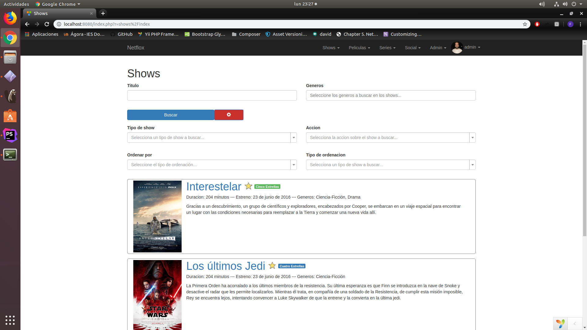
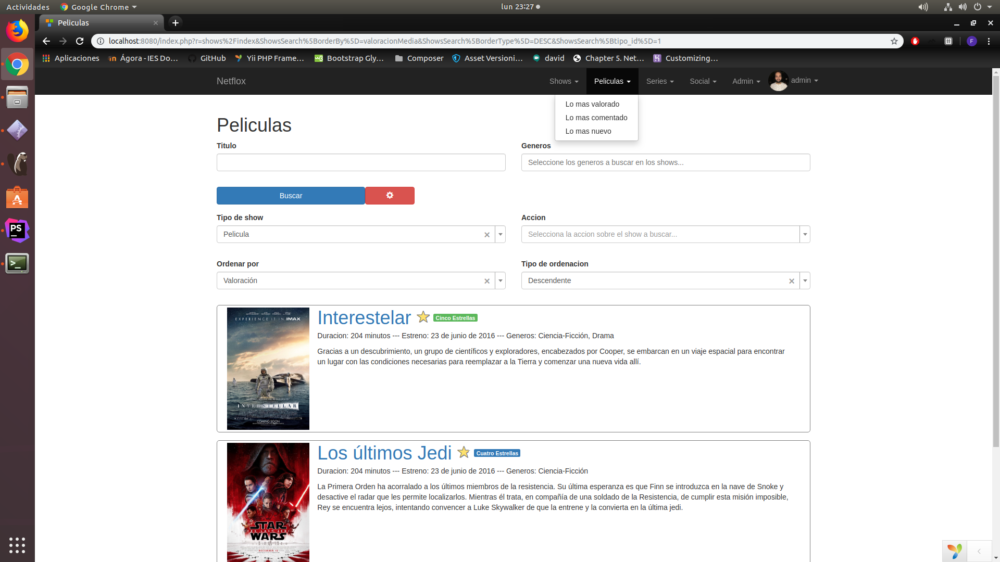
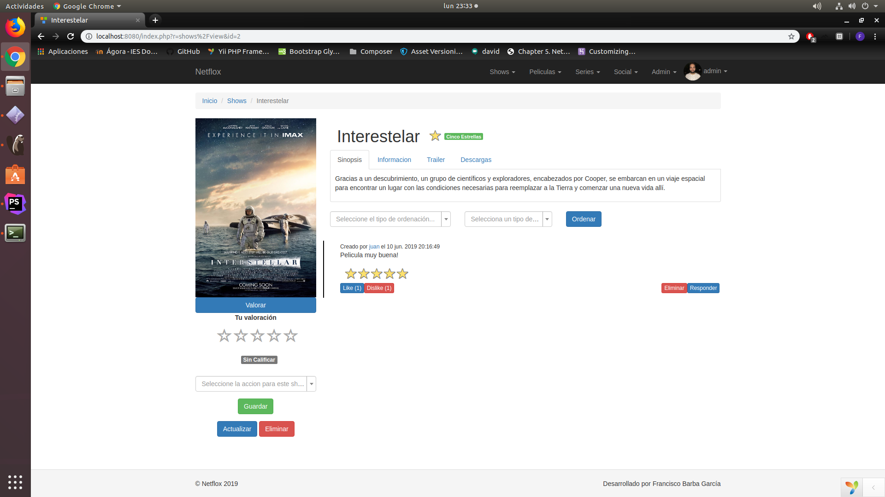
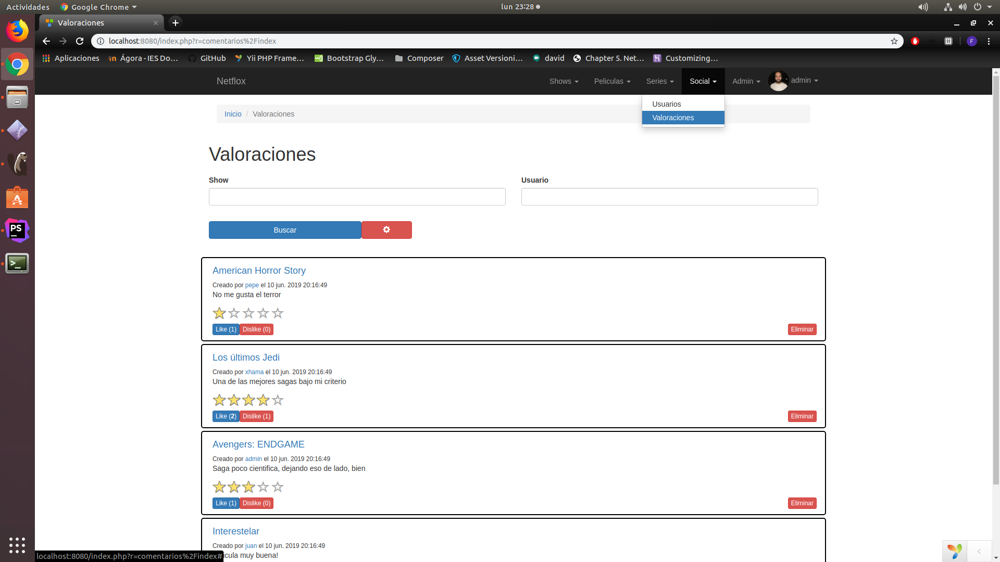
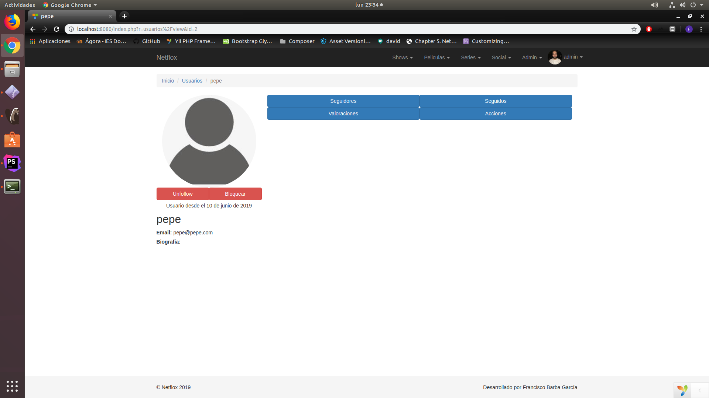
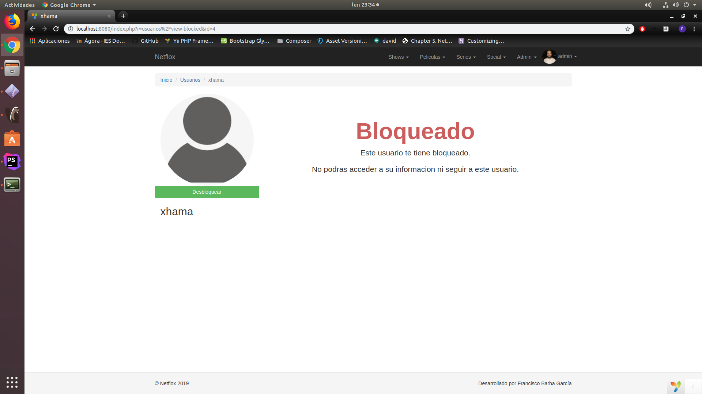
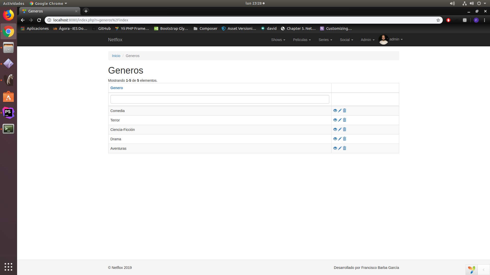
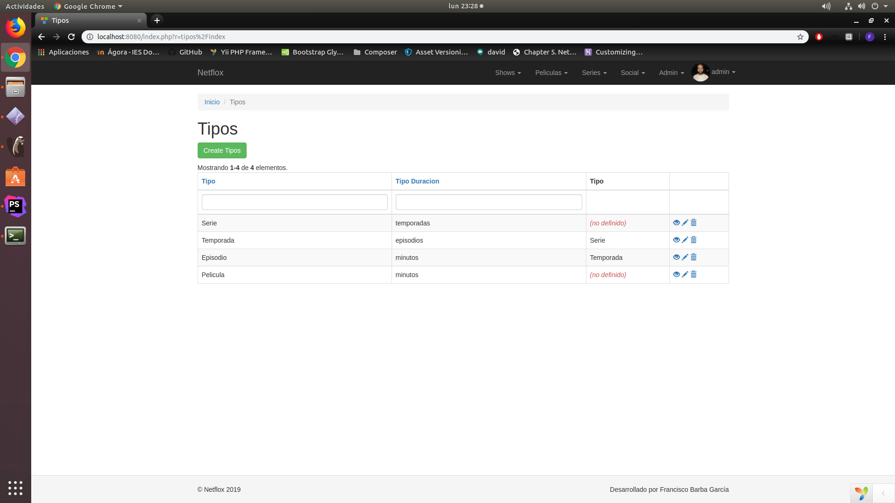

Manual de usuario ¶
Página de inicio sin loguearse ¶

Página de inicio antes de loguearnos. No podremos acceder a ninguna otra pagina, tenemos un formulario para hacer Login o Registrarse en caso de que aún no lo estemos.
Página de inicio ¶

En esta página podemos encontrar todos los shows y todas las opciones en la barra de menú superior. Entre ellas se encuentran: Shows, Peliculas, Series, Social, Admin(En caso de serlo) y Mi perfil.
Busqueda ¶

Todas las paginas tienen un menu de busqueda, en este caso el menu es desplegable, dejando solo a la vista lo imprescindible.
A continuación explicaremos las diferentes opciones disponibles en el menú superior.
DropDown con ordenacion tipica ¶

Tanto Shows, como Peliculas y Series poseen en un menu desplegable las opciones mas tipicas de busqueda para facilitar la navegacion.
Pagina de un show ¶

En esta página, como usuarios podemos valorar, comentar valoraciones, votar tanto valoraciones como comentarios y borrar las valoraciones/comentarios del propio usuario, asi como realizar una accion listada en el glosario.
Como administrador, se puede realizar las mismas acciones que en el parrafo anterior, solo que puedes eliminar cualquier valoracion/comentario a gusto.
En la parte izquierda tenemos la imagen con las opciones posibles a realizar sobre el show. Como administrador nos apareceran botones para Editar o Eliminar dicho show.
En la parte central aparecerá la informacion sobre el show, asi como los enlaces de descarga y los comentarios.
Página de Valoraciones ¶

En esta página podemos encontrar las valoraciones de todos los usuarios, con los botones de like y dislike tipicos y un link al show que se valora.
Página de Usuarios ¶

En esta página podemos encontrar a los usuarios de la aplicacion, teniendo varias opciones que podremos ejecutar sobre ellos como usuarios, tales como Follow, Unfollow, Bloquear y Desbloquear.
Los usuarios que nos tengan bloqueados apareceran con informacion reducida.
Página de Usuario Personal ¶

En esta página podemos encontraremos a un usuario de la aplicacion, siempre y cuando no nos tenga bloqueado. Tenemos varias opciones que podremos ejecutar sobre ellos como usuarios, tales como Follow, Unfollow, Bloquear y Desbloquear.
Podremos tambien visualizar las Acciones realizadas por dicho usuario a los diferentes shows de la aplicacion, sus Valoraciones, asi como sus Seguidores y a las personas a las que esta Siguiendo
Página de Usuario Bloqueado ¶

Esta página será mostrada cuando entremos al perfil de un usuario de la aplicacion que nos tiene bloqueado. Tenemos varias opciones que podremos ejecutar sobre ellos como usuarios, en este caso solo Bloquear y Desbloquear.
Página de Mi Perfil ¶

Aquí encontramos nuestra informacion personal, pudiendo modificarla a placer.
Podremos tambien visualizar las Acciones realizadas por el usuario a los diferentes shows de la aplicacion, sus Valoraciones, asi como sus Seguidores y a las personas a las que esta Siguiendo
Tambien podremos ver las Acciones y Valoraciones de las personas a las que estamos Siguiendo, asi como a las personas que estamos bloqueando.
DropDown de Opciones de Admin ¶

En este desplegable encontraremos los CRUD de las diferentes entidades de la aplicacion.




Página de Creacion de Shows ¶

En esta pagina encontraremos diferentes pestañas a rellenar para completar el formulario del show.